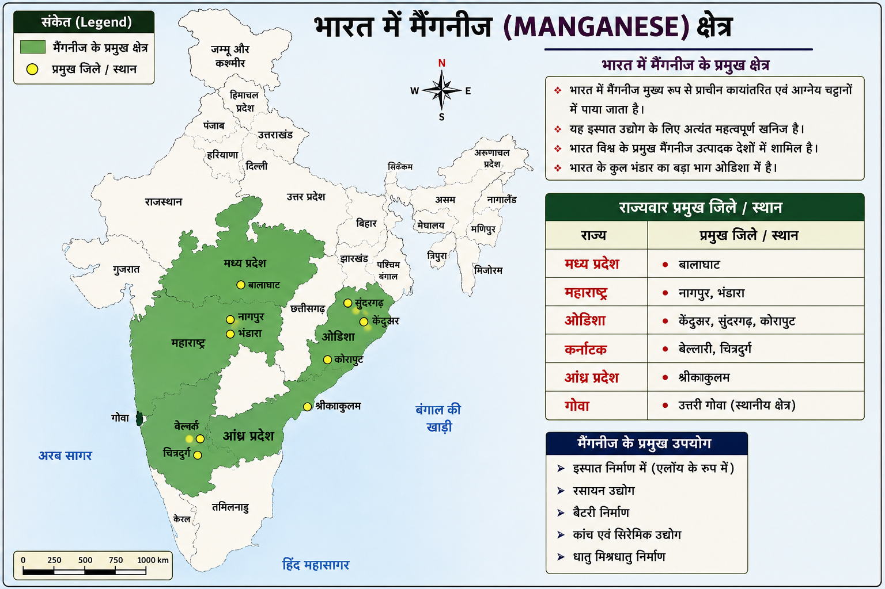

<!-- <!DOCTYPE html>
<html lang="hi">
<head>
<meta charset="UTF-8">
<meta name="viewport" content="width=device-width, initial-scale=1.0">
<title>भारत के प्रमुख खनिज</title>

<style>

*{
margin:0;
padding:0;
box-sizing:border-box;
font-family:"Nirmala UI",sans-serif;
}

body{
background:#f4f6f8;
}

header{
background:#0d6efd;
color:white;
text-align:center;
padding:20px;
font-size:32px;
font-weight:bold;
}

.container{
width:95%;
max-width:1400px;
margin:auto;
padding:20px;
}

.buttons{
display:grid;
grid-template-columns:repeat(auto-fit,minmax(180px,1fr));
gap:10px;
margin-bottom:20px;
}

.buttons button{
padding:12px;
border:none;
border-radius:8px;
cursor:pointer;
font-size:17px;
font-weight:bold;
color:white;
transition:.3s;
}

.buttons button:hover{
transform:scale(1.04);
}

.manganese{
background:#2e7d32;
}

.copper{
background:#bf6d30;
}

.bauxite{
background:#c62828;
}

.gold{
background:#d4a017;
color:black !important;
}

.main{
display:grid;
grid-template-columns:60% 40%;
gap:20px;
}

.card{
background:white;
border-radius:12px;
padding:15px;
box-shadow:0 0 10px rgba(0,0,0,.15);
}

#mineralMap{
width:100%;
border-radius:10px;
}

#info{
font-size:14px;
line-height:1.6;
}

#info h2{
color:#0d6efd;
margin-bottom:10px;
}

#info h3{
margin-top:12px;
margin-bottom:5px;
color:#333;
}

#info ul{
padding-left:20px;
}

@media(max-width:900px){

.main{
grid-template-columns:1fr;
}

}

</style>
</head>
<body>

<header>
भारत के प्रमुख खनिज
</header>

<div class="container">

<div class="buttons">

<button class="manganese"
onclick="showMineral('manganese')">
मैंगनीज
</button>

<button class="copper"
onclick="showMineral('copper')">
तांबा
</button>

<button class="bauxite"
onclick="showMineral('bauxite')">
बॉक्साइट
</button>

<button class="gold"
onclick="showMineral('gold')">
सोना
</button>

</div>

<div class="main">

<div class="card">



</div>

<div class="card">

<div id="info">

<h2>मैंगनीज (Manganese)</h2>

<h3>प्रमुख राज्य</h3>

<ul>
<li>मध्य प्रदेश</li>
<li>महाराष्ट्र</li>
<li>ओडिशा</li>
<li>कर्नाटक</li>
<li>आंध्र प्रदेश</li>
<li>गोवा</li>
</ul>

<h3>प्रमुख जिले</h3>

<ul>
<li>बालाघाट (मध्य प्रदेश)</li>
<li>नागपुर एवं भंडारा (महाराष्ट्र)</li>
<li>केंदुझर, सुंदरगढ़, कोरापुट (ओडिशा)</li>
<li>बेल्लारी, चित्रदुर्ग (कर्नाटक)</li>
<li>श्रीकाकुलम (आंध्र प्रदेश)</li>
</ul>

<h3>महत्वपूर्ण तथ्य</h3>

<ul>
<li>भारत मैंगनीज उत्पादन में प्रमुख देशों में शामिल है।</li>
<li>बालाघाट जिला मैंगनीज के लिए प्रसिद्ध है।</li>
<li>इस्पात उद्योग में व्यापक उपयोग।</li>
<li>भारत के बड़े भंडार ओडिशा में पाए जाते हैं।</li>
</ul>

</div>

</div>

</div>

</div>

<script>

const minerals = {

manganese:{
img:"manganese.png",
info:`
<h2>मैंगनीज (Manganese)</h2>

<h3>प्रमुख राज्य</h3>
<ul>
<li>मध्य प्रदेश</li>
<li>महाराष्ट्र</li>
<li>ओडिशा</li>
<li>कर्नाटक</li>
<li>आंध्र प्रदेश</li>
<li>गोवा</li>
</ul>

<h3>प्रमुख जिले</h3>
<ul>
<li>बालाघाट (मध्य प्रदेश)</li>
<li>नागपुर एवं भंडारा (महाराष्ट्र)</li>
<li>केंदुझर, सुंदरगढ़, कोरापुट (ओडिशा)</li>
<li>बेल्लारी, चित्रदुर्ग (कर्नाटक)</li>
<li>श्रीकाकुलम (आंध्र प्रदेश)</li>
</ul>

<h3>महत्वपूर्ण तथ्य</h3>
<ul>
<li>भारत मैंगनीज उत्पादन में प्रमुख देशों में शामिल है।</li>
<li>बालाघाट जिला मैंगनीज के लिए प्रसिद्ध है।</li>
<li>इस्पात उद्योग में व्यापक उपयोग।</li>
<li>भारत के बड़े भंडार ओडिशा में पाए जाते हैं।</li>
</ul>
`
},

copper:{
img:"copper.png",
info:`
<h2>तांबा (Copper)</h2>

<h3>प्रमुख राज्य</h3>
<ul>
<li>राजस्थान</li>
<li>मध्य प्रदेश</li>
<li>झारखंड</li>
</ul>

<h3>प्रमुख जिले</h3>
<ul>
<li>झुंझुनू (खेतड़ी)</li>
<li>अलवर</li>
<li>बालाघाट (मालांजखंड)</li>
<li>पूर्वी सिंहभूम (घाटशिला)</li>
</ul>

<h3>महत्वपूर्ण तथ्य</h3>
<ul>
<li>खेतड़ी कॉपर बेल्ट भारत का प्रमुख तांबा क्षेत्र है।</li>
<li>मालांजखंड भारत की सबसे बड़ी तांबा खदान है।</li>
<li>घाटशिला झारखंड का प्रसिद्ध तांबा क्षेत्र है।</li>
</ul>
`
},

bauxite:{
img:"bauxite.png",
info:`
<h2>बॉक्साइट (Bauxite)</h2>

<h3>प्रमुख राज्य</h3>
<ul>
<li>ओडिशा</li>
<li>गुजरात</li>
<li>झारखंड</li>
<li>महाराष्ट्र</li>
<li>छत्तीसगढ़</li>
<li>मध्य प्रदेश</li>
</ul>

<h3>प्रमुख जिले</h3>
<ul>
<li>कालाहांडी</li>
<li>कोरापुट</li>
<li>कच्छ</li>
<li>लोहरदगा</li>
<li>रायगढ़</li>
<li>कटनी</li>
</ul>

<h3>महत्वपूर्ण तथ्य</h3>
<ul>
<li>भारत में बॉक्साइट का सर्वाधिक भंडार ओडिशा में है।</li>
<li>बॉक्साइट से एल्युमिनियम प्राप्त किया जाता है।</li>
<li>पंचपटमाली प्रसिद्ध बॉक्साइट क्षेत्र है।</li>
</ul>
`
},

gold:{
img:"gold.png",
info:`
<h2>सोना (Gold)</h2>

<h3>प्रमुख राज्य</h3>
<ul>
<li>कर्नाटक</li>
<li>आंध्र प्रदेश</li>
<li>झारखंड</li>
<li>राजस्थान</li>
</ul>

<h3>प्रमुख जिले</h3>
<ul>
<li>कोलार</li>
<li>हुट्टी</li>
<li>रामगिरि</li>
<li>सिंहभूम</li>
<li>बांसवाड़ा</li>
</ul>

<h3>महत्वपूर्ण तथ्य</h3>
<ul>
<li>हुट्टी गोल्ड माइंस प्रमुख सक्रिय स्वर्ण खदान है।</li>
<li>कोलार गोल्ड फील्ड ऐतिहासिक रूप से प्रसिद्ध है।</li>
<li>कर्नाटक प्रमुख स्वर्ण उत्पादक राज्य है।</li>
</ul>
`
}

};

function showMineral(type){

document.getElementById("mineralMap").src =
minerals[type].img;

document.getElementById("info").innerHTML =
minerals[type].info;

}

</script>

</body>
</html> -->
